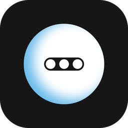

A simple, lightweight Mac app for managing and studying Anki decks.
Here’s what r/Anki users say about Ankitron
Version 0.38.1 · Release notes
Requires the
Anki desktop app and the
AnkiConnect
add-on.
Ankitron is an unofficial third-party app and is not affiliated with the
official Anki project.